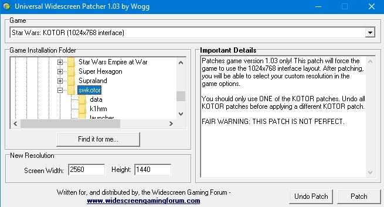
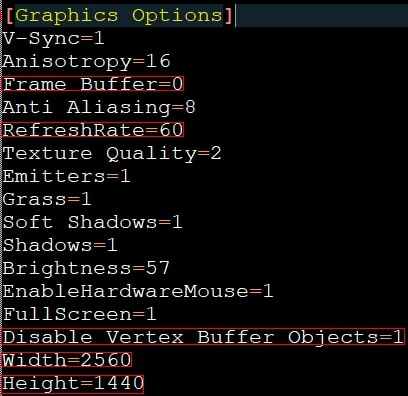
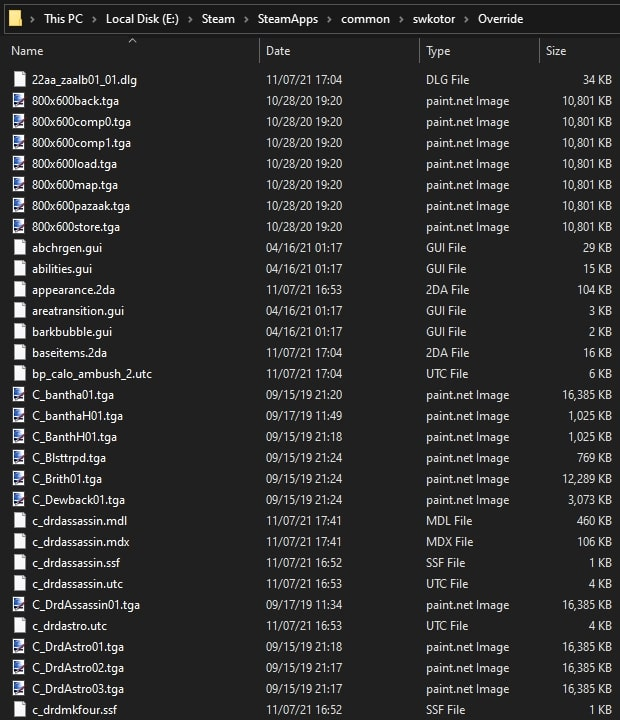
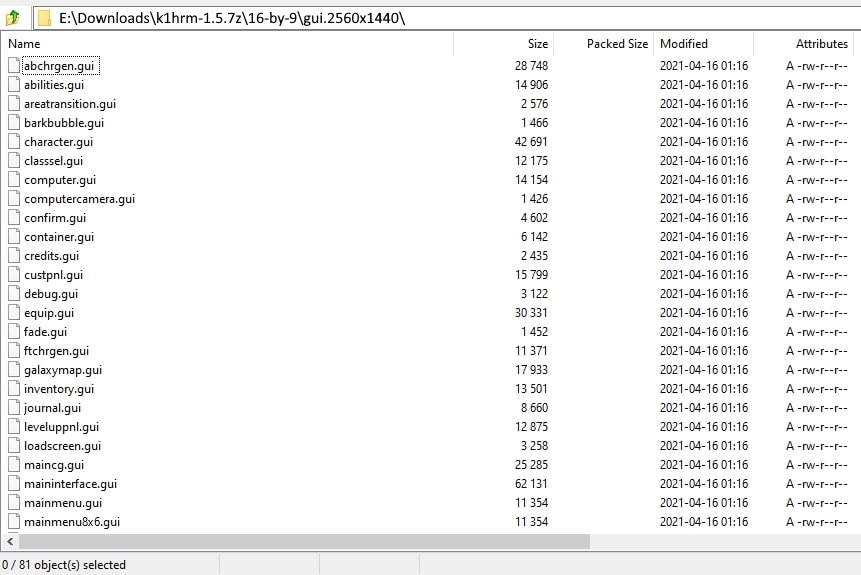
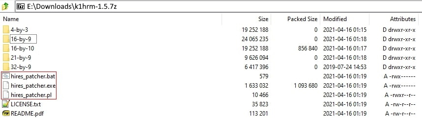

ATTENTION:
This guide involves my own personal methods for installing and using mods with KotOR.
Like all modding, you are responsible for doing your own research to determine the best methods for modding your game.
I provide no warranty and take no liability or responsibility for any issues that arise due to the contents of this guide.
Please also note that if you choose to install mods outside the scope of this guide, the steps and content in this guide may differ slightly.
Note: Careful attention must be paid to any mods with .tpc files.
Especially for the big texture packs, the mod authors give you the option of using .tga (higher quality, bigger file size) OR .tpc (lower quality than .tga, smaller file size).
See the "unused_tpcs.txt" file for a comprehensive list of .tpc files you do NOT need to install.
This guide is written with the Steam release in mind, but should still work for both the GOG release and the original CD-ROM release.
Widescreen Mods
- After you perform a fresh install of the game, run it once to generate the necessary files that you will need to make changes to. Afterwards, make a backup of your existing "swkotor.exe" file (rename it to "swkotor.exe.bak").
- Downloads and extract KotOR Editable Executable into your game's install folder (example: "E:\Steam\SteamApps\common\swkotor"). This new "swkotor.exe" is what you will use in future steps. You need this file because the Steam release is encrypted and cannot be patched.
- Download and extract Universal Widescreen into your game's install folder.
- Carefully read and follow the instructions on the page above up to the end of the "Widescreen Resolutions" section (you will come back to this page in step 5).
- The most important steps are to ensure you selected 1024x768 within "uniws.exe" (you have to select your game's install folder/location (see step 2), you are NOT looking for the .exe file within this program). Also, do NOT click the "Find it for me..." button as it takes a long time. Additionally, this program creates a backup of your editable .exe so you will be able to reference that if you have any issues.
- Next, ensure your preferred resolution is above 1440x900 (you can select a lower resolution, but there are additional steps you have to follow that are shown on the page above).

- Edit the "swkotor.ini" file (located in your game's install folder) and make the following changes (you can add the lines if they are not in the file).
- Set "Width" to your monitor's width.
- Set "Height" to your monitor's height.
- Set "Frame Buffer = 1" to 0.
- Make sure "Disable Vertex Buffer Objects" is set to 1.
- Set or add "RefreshRate=60".
- Save the file when done.

- STOP AND TEST THE GAME! DO NOT MOVE ON UNTIL YOU HAVE CHECKED YOUR RESOLUTION IN GAME AND CONFIRMED THAT IT IS CORRECT!
- Download and extract HUD Corrections into your game's install folder.
- Extract the folder that corresponds to the resolution you patched earlier (example: If you entered 2560x1440 in the uniws.exe patcher, you must pick 2560x1440 as the folder in this step).
- Move all the extracted files within the folder you chose into the "Override" folder (create one if it doesn't exist).
- Example: "E:\Steam\SteamApps\common\swkotor\Override". Note: There should NOT be any folders within the "Override" folder. All files must be "loose" and yes, it gets ugly once you've installed a bunch of mods.

- Download and extract KotOR High Resolution Menus 1.5 into your game's install folder.
- Find your monitor's aspect ratio and move the corresponding GUI files from the folder you just extracted into your "Override" folder. Example: If your monitor's aspect ratio is 16x9, you must open that folder, find the folder that contains your monitor's resolution (2560x1440, as an example) and move the files within that folder into your "Override" folder. There should be 81 files total. Overwrite any files if asked.

- Move the patcher files ("hires_patcher.bat", hires_patcher.exe", and "hires_patcher.pl") into your install folder and run "hires_patcher.bat", then follow the prompts. Consult the readme if you have any questions or issues.

- You may now delete the "k1hrm-1.5" folder containing the other aspect ratios and GUI files you do not need.
- STOP AND TEST THE GAME! DO NOT MOVE ON UNTIL YOU HAVE CHECKED YOUR RESOLUTION IN GAME AND CONFIRMED THAT IT IS CORRECT!
- Download and extract KotOR HD UI Menu Pack 1.1 into your "Override" folder. Note: This mod has it's own Override folder, so you can simply drag-and-drop that folder into your game's install folder to merge the new files into your existing Override folder.
- Download and extract Widescreen Cockpit and Racing Track on Manaan into your game's "Override" folder.
- Done! Launch the game and test to make sure everything is working up to this point.
Essential Mods
- Download and extract KotOR 1 Community Patch 1.8.1 to a new folder on your desktop. Once extracted, open the folder and run the "INSTALL.exe" file, paying attention to the prompts. Note: Installing this mod can take several minutes.
- STOP AND TEST THE GAME! DO NOT MOVE ON UNTIL YOU ENSURE THAT THE GAME LAUNCHES WITHOUT ANY ERRORS!
- Download and extract KotOR 1 Restoration 1.2 to a new folder on your desktop.
- Once extracted, open the folder and run the "K1R_1.2_Installer.exe" file.
- Leave the dropdown on "Main K1E 1.2 Installation".
- Follow the prompts. Note: This mod also takes a couple of minutes to install.
- If you encounter any warnings, you can ignore them.
- STOP AND TEST THE GAME! DO NOT MOVE ON UNTIL YOU ENSURE THAT THE GAME LAUNCHES WITHOUT ANY ERRORS!
- Mods 1-11 can be installed simply by downloading and extracting them into your game's "Override" folder.
- Selphadur's KotOR Texture Redux - Make sure to download the main file, the 1.1 update file, and the K1RPatch optional file. Also make sure to delete "PLC_FrcDist01.tga" after updating.
- Ultimate Character Overhaul -Redux- - You can download whichever version you like, just make sure to only install one. I recommend the full TPC version since the visual difference is minimal and the download size is much smaller.
- Ultimate Endar Spire, Star Forge, and Yavin Station High Resolution HD Upscale - For mods 3-10, I recommend the TPC version for the same reason as stated above.
- Ultimate Taris High Resolution HD Upscale
- Ultimate Dantooine High Resolution HD Upscale
- Ultimate Tatooine High Resolution HD Upscale
- Ultimate Kashyyyk High Resolution HD Upscale
- Ultimate Manaan High Resolution HD Upscale
- Ultimate Korriban High Resolution HD Upscale
- Ultimate Unknown World High Resolution HD Upscale
- Loadscreens in Color
- KotOR 1 Remastered (AI Upscaled) Cutscenes - I recommend downloading the version that corresponds to your monitor's resolution. Follow the readme on the mod page for install instructions. This mod does NOT go in your Override folder!
- Done! I recommend testing the game again, but since most of the mods in step 5 are textures, the game should be fine.
Conclusion
The last step before you can enjoy your newly modded SWKotOR experience is to delete all unneeded .tpc files.
A list of those files can be downloaded here (right-click > "Save link as...").
The fastest way to delete these files is to download and run this PowerShell script I wrote.
If you do not want to download the script, you can simply copy/paste the commands into a PowerShell terminal on your system.
Note that if you do choose to run the script, you will have to allow PowerShell to run unsigned scripts.
More info about that can be found here.